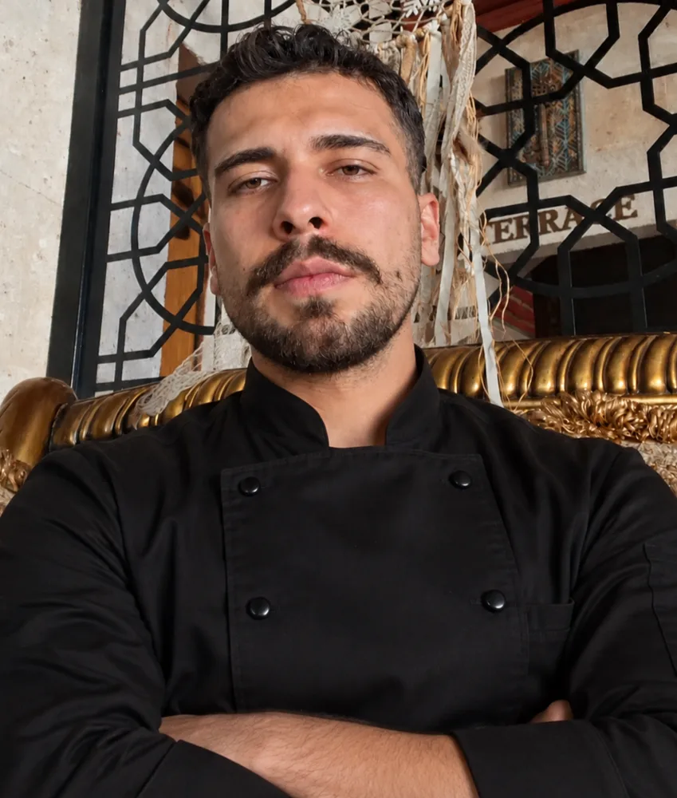

Yerel lezzetlerden modern dokunuşlara uzanan bir mutfak yolculuğu.
Mutfağı yalnızca yemek hazırlanan bir yer değil; emeğin, yaratıcılığın ve lezzetin buluştuğu bir alan olarak görüyorum. Her tabakta kaliteli malzemeyi, doğru tekniği ve lezzeti bir araya getirmeyi hedefliyorum.

Turizm alanına duyduğum ilgiyle başlayan yolculuğum, zamanla mutfağa ve yemek yapmaya olan tutkuma dönüştü. Aşçılığı, kendimi sürekli geliştirebileceğim ve yaratıcılığımı ortaya koyabileceğim bir meslek olarak seçtim.
Türk mutfağının köklü lezzetlerine, Kapadokya'nın yerel ürünlerine ve kahvaltı kültürüne ilgi duyuyorum. Geleneksel tatları modern tekniklerle buluşturarak sade, dengeli ve lezzet odaklı tabaklar hazırlamayı seviyorum.
Mevsiminde, taze ve kaliteli malzemelerle çalışmayı önemsiyorum. Yerel ürünlerin karakterini koruyarak onları doğru tekniklerle değerlendirmeyi ve malzemenin kendi lezzetini ön plana çıkarmayı tercih ediyorum.
Benim için mutfağın temelinde temizlik, ekip uyumu ve lezzet var. İyi bir yemeğin yalnızca doğru tarifle değil, özenli çalışma ve güçlü bir ekip anlayışıyla ortaya çıktığına inanıyorum.